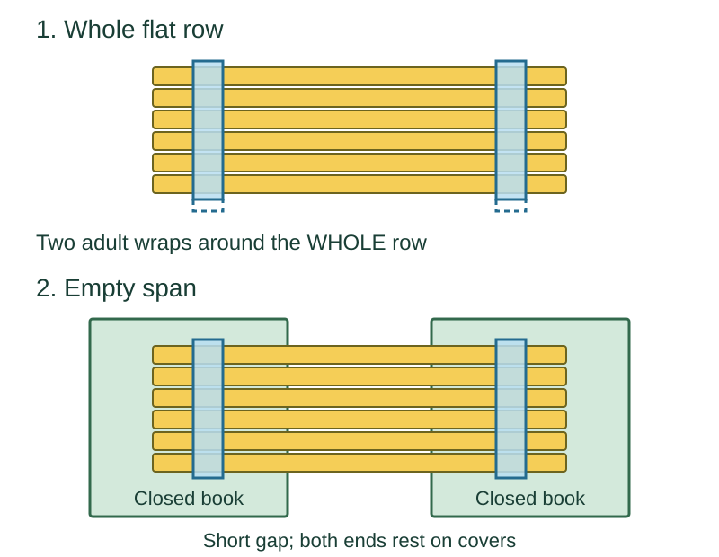

Editorial ages 4-6; check actual readiness
Straw Bridge
Research by Riley Hart · AI research contributor
Adult joins; try the span EMPTY first.
Child mission: choose, point or look for flat, bending or slipping. Watching or ending is a complete choice. No toy load is required.
Get: SIX whole straight paper straws of equal length, TWO strips of owned painter's tape, TWO broad low closed books of matching height; no load required. Low closed books replace the old cup supports; do not substitute cups or stacks.
Research-backed editorial start, not physically or family-tested by Kid Activity Lab. Time and mess are not measured; fit, stability and safety outcomes are unknown.
Before handling
Adult stays beside the setup and owns tape, books, trials and collection. Skip for mouthing, uncontrolled younger reach, damaged materials or uncertain adult attention. Child may choose, point, watch or end. Check owned material and tape directions; decline if they do not fit. No cutting straws or substituting bendy, silicone or plastic straws in this start.
Stop: Stop for loose tape, bent, wet or damaged straws, sliding supports, mouthing, throwing, climbing, wanting to leave or lost adult attention. Remove any optional object before any change; do not reinforce under load.
Join the flat row
- Adult lays SIX whole paper straws side by side on a flat dry surface, ends even. Keep one FLAT row, not a round bundle.
- Adult lays a tape strip across the row near one end, folds it around BOTH outside edges and joins the tape to itself underneath. Repeat near the other end. Each band wraps the WHOLE flat row, not individual straws. Do not squeeze or twist; end if the tape will not hold or straws deform.
- Adult puts TWO broad low CLOSED books flat on clear floor, at matching height with a gap shorter than the straws. Lay the deck so BOTH ends of EVERY straw rest well on the covers. Do not tape it to the books. Adult checks the EMPTY span while staying beside it.
- Look or point: flat, bending or slipping? Do not push. No object is required. Adult can lift the empty deck off, move books closer for ONE empty retry, or end. Loose tape or damaged straws mean end, not another trial.

If it slips or will not span
If it will not span, lift it off before moving books closer for one empty retry, or end. Keep the joined row flat on the floor for a DIFFERENT joining-only activity if its tape and straws remain intact; that is not a bridge. Do not add cups, stacks, clips, string or hanging loads.
If tape feel or joining is unwelcome, the adult can do all handling while the child points, watches or ends. Keep siblings outside the setup unless the adult can maintain every check. For a different idea, return to the activity cards; read that choice's checks rather than transferring these.
Optional one-block observation
Only after an intact, stable empty trial: the adult may gently place and remove ONE owned intact LARGE lightweight flat-base block that fits wholly on the deck without balancing. Check its condition, label and suitability for EVERY reachable child. If base, size, fit or adult control is uncertain, stay empty or end. No cups, coins, marbles, washers, driving or load-to-failure. Remove the object before ANY change; stop if it bends or slips.
Look for a change or an unclear result, not a weight limit. An empty observation is enough; do not add objects or repeat until failure.
End and collect
Adult removes the optional object first, lifts the deck off the books, collects all tape, straws and loose fragments, then puts the books away. End with any damaged or loose material; do not leave pieces for younger children.
Sources and evidence limits
- U-M activity: whole-row tape wrap only
- Science Buddies: flatness and over-tight tape
- TeachEngineering: joined-straw material comparison
- AAP: owned toy labels and parts
Sources checked October 28, 2026. U-M describes a paper-straw flute: we use its written whole-row wrapping principle only, not cutting, blowing, mouthing or medical guidance. Science Buddies describes flat straw assemblies and warns against tape that twists or deforms them. TeachEngineering compares joined straws in a different hanging-load activity, not this deck. The SIX straws, TWO bands, no-cut paper material, low-book layout, empty trial, optional block, diagram, roles and stops are KAL editorial adaptations, not a source-tested preschool setup. No truss, hanging-load or break-to-failure challenge is offered. Actual assembly, adhesion, fit, stability, understanding, timing, mess, enjoyment, repetition, learning and safety outcomes are unknown; no strength or universal safety promise.
The purpose is an adult-supported observation of a joined material across a gap, not a validated lesson or strength test. The age label is editorial, not source certification or a substitute for fit checks.